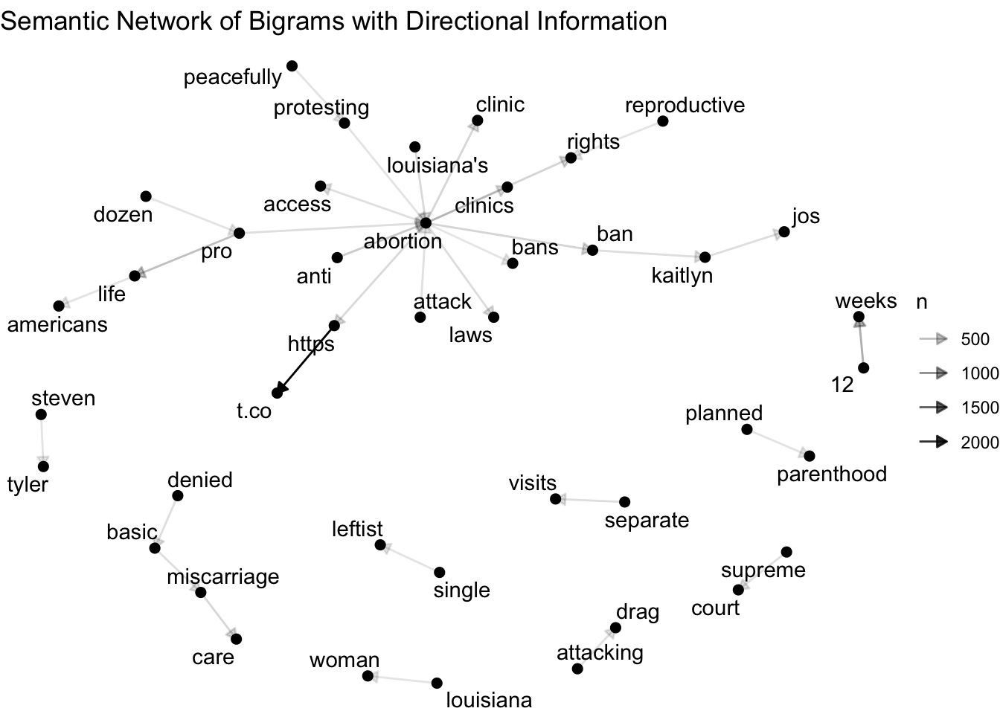

8. Network analysis
Learning goals
By the end of this tutorial, you will be able to:
- Understand the difference between semantic networks and social networks.
- Build a semantic network from bigrams in text data.
- Build a social network from user mentions and replies.
- Interpret common network measures such as degree, betweenness, and community structure.
- Visualize networks using igraph and ggraph.
Introduction to Network Analysis
Network analysis helps us study relationships rather than isolated observations. In text analysis, this can mean examining how words co-occur with one another. In social media research, it can mean examining how users interact through replies and mentions.
In this tutorial, we cover two related applications:
- Semantic network analysis, which maps connections among words
- Social network analysis, which maps connections among users
A network has two basic parts:
- nodes, which represent words or users
- edges, which represent relationships between them
Required Packages
You only need to install packages once.
Importing data
For this tutorial, we use a CSV file containing abortion-related Twitter data.
tweets <- read.csv("~/Desktop/abortion_tweets.csv", header = TRUE, sep = ",")
tweets_subset <- tweets %>%
select(
id,
author_id,
created_at,
text,
public_metrics.impression_count,
public_metrics.like_count,
public_metrics.quote_count,
public_metrics.reply_count,
public_metrics.retweet_count,
referenced_tweets,
in_reply_to_user_id,
entities.mentions
)
head(tweets_subset) id author_id created_at
1 1608879536376262656 1293292839963631616 2022-12-30T17:35:47.000Z
2 1608879534690160640 1407429095005245440 2022-12-30T17:35:47.000Z
3 1608879520039448320 925802396609073280 2022-12-30T17:35:43.000Z
4 1608879519641002240 99833187 2022-12-30T17:35:43.000Z
5 1608879518382718720 228617818 2022-12-30T17:35:43.000Z
6 1608879503165780224 3206943202 2022-12-30T17:35:39.000Z
text
1 RT @KelseyDotOrg: Today my piece for @atrupar’s Public Notice on abortion access in Missouri and Kansas is up. Thank you Aaron for the oppo…
2 You know any of these hags? Get Paid! $10,000 Reward for Info https://t.co/mgpx6PoQTo via @gatewaypundit
3 RT @mjs_DC: After being denied basic miscarriage care during two separate visits to the ER because of Louisiana's abortion ban, Kaitlyn Jos…
4 RT @MrAndyNgo: Jennifer Thompson, an extremist abortion & BLM activist in Portland, has shared in graphic detail her recent decision to end…
5 RT @LifeNewsToo: The FBI has arrested a dozen pro-life Americans for peacefully protesting abortion, but not one single leftist for firebom…
6 RT @Moneymykpt2: Them Weeks Fly when you tryna get that Abortion 😭
public_metrics.impression_count public_metrics.like_count
1 0 0
2 10 1
3 0 0
4 0 0
5 0 0
6 0 0
public_metrics.quote_count public_metrics.reply_count
1 0 0
2 0 0
3 0 0
4 0 0
5 0 0
6 0 0
public_metrics.retweet_count referenced_tweets
1 190 retweeted, 1608817588376834048
2 1
3 1027 retweeted, 1608871631765786624
4 2278 retweeted, 1529674574266257408
5 41 retweeted, 1608860717515423744
6 367 retweeted, 1603919700890640389
in_reply_to_user_id
1 NA
2 NA
3 NA
4 NA
5 NA
6 NA
entities.mentions
1 c(3, 37), c(16, 45), c("KelseyDotOrg", "atrupar"), c("1375165814", "288277167")
2 91, 105, gatewaypundit, 19211550
3 3, 10, mjs_DC, 88215673
4 3, 13, MrAndyNgo, 2835451658
5 3, 15, LifeNewsToo, 74552263
6 3, 15, Moneymykpt2, 1153357658268819457Part 1: Semantic Network Analysis
What is a semantic network?
A semantic network shows how words are connected based on their co-occurrence in text. Here, we use bigrams (two-word combinations) to identify words that frequently appear together.
Step 1: Clean retweet prefixes
We begin by removing leading RT @username patterns so they do not dominate the network.
Step 2: Extract bigrams and remove stopwords
tw_bigram <- tweets_cleaned %>%
unnest_tokens(bigram, text, token = "ngrams", n = 2) %>%
separate(bigram, into = c("word1", "word2"), sep = " ") %>%
filter(
!word1 %in% stop_words$word,
!word2 %in% stop_words$word
) %>%
unite(bigram, word1, word2, sep = " ") %>%
count(bigram, sort = TRUE)
head(tw_bigram) bigram n
1 https t.co 2491
2 12 weeks 677
3 pro life 495
4 anti abortion 386
5 abortion rights 286
6 abortion ban 270Step 3: Separate bigrams into two words
Step 4: Filter infrequent bigrams
The threshold used here (n > 100) is just an example. Lower thresholds keep more word pairs but can make the network harder to read.
Step 5: Build the network object
Step 6: Visualize the semantic network
Optional: Add directional edges
direction_edges <- grid::arrow(type = "closed", length = unit(.2, "cm"))
ggraph(bigram_graph, layout = "fr") +
geom_edge_link(aes(edge_alpha = n), arrow = direction_edges) +
geom_node_point(size = 2) +
geom_node_text(aes(label = name), repel = TRUE) +
labs(title = "Semantic Network of Bigrams with Directional Information") +
theme_void()
Describe the semantic network
Questions for interpretation
- Which words appear most connected?
- Are there clusters of words representing different themes?
- Do certain words act as bridges between themes?
- What does this suggest about how abortion is discussed in the dataset?
Summary
In this tutorial, you learned how to:
- construct a semantic network from bigrams
- visualize relationships among words using
igraphandggraph - construct a social network from user mentions and replies
- interpret common network measures such as degree, betweenness, density, and modularity
Network analysis is useful because it helps us move from isolated units of text or users to the broader relational structure that shapes communication.